20 photos · 4 cities · photo 1 (outlined) is the mosaic's large photo · generated 2026-11-08
Amsterdam amsterdam
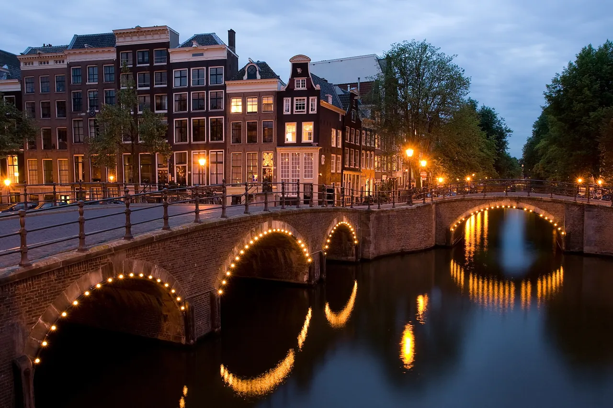
1. Lit bridges where the Reguliersgracht meets the Keizersgracht at duskAlt: Arched brick bridges outlined in small lights over a canal at dusk, with gabled canal houses and trees behindMassimo Catarinella · CC BY-SA 3.0 · Commons · 1280×853
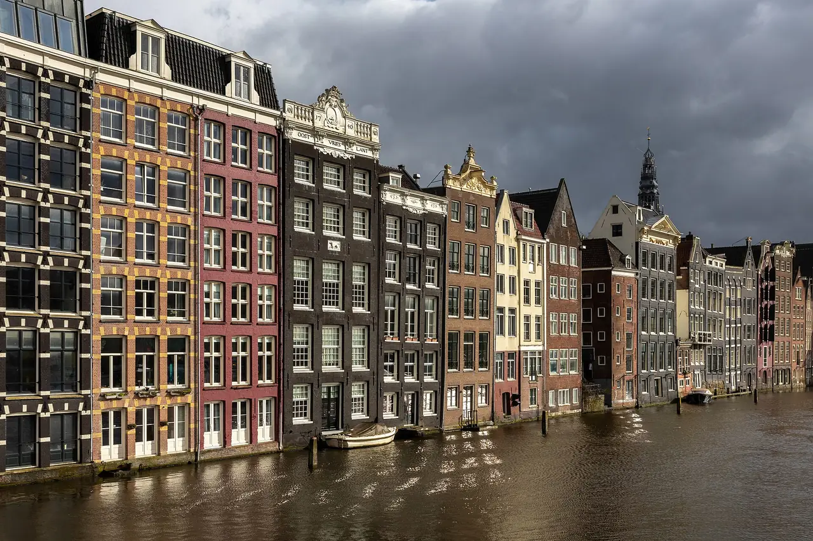
2. Old merchants' houses leaning over the water on the DamrakAlt: A row of tall, narrow gabled houses in brick and painted wood rising straight out of the water, under a cloudy skyBasile Morin · CC BY-SA 4.0 · Commons · 1280×853
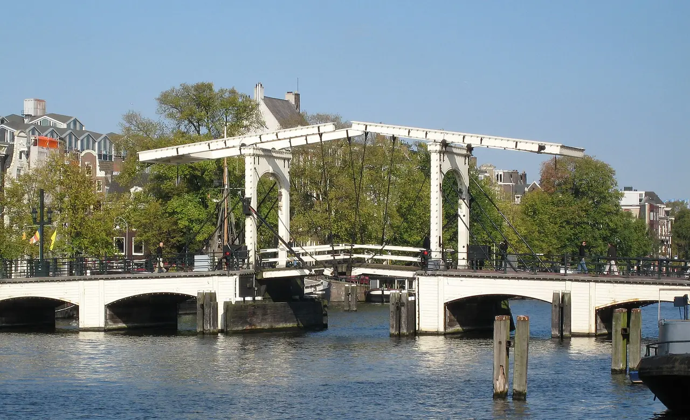
3. The Magere Brug, a white wooden drawbridge over the AmstelAlt: A white wooden double-leaf drawbridge spanning a wide river, with trees and canal houses on the far bankS Sepp · CC BY-SA 3.0 · Commons · 1280×780
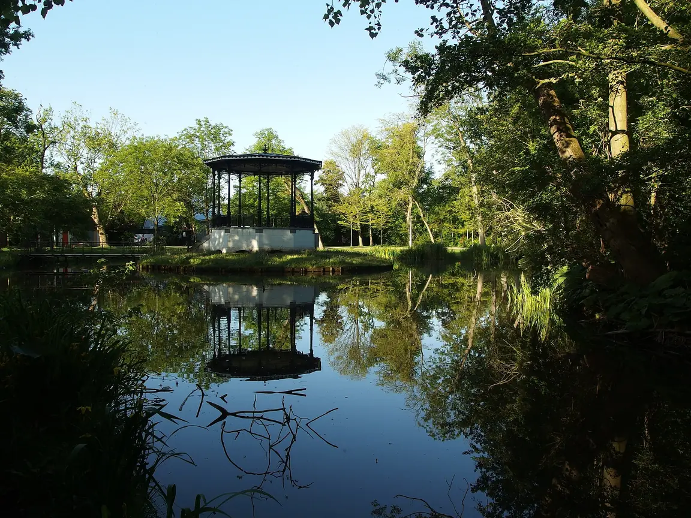
4. The bandstand on its pond in the Vondelpark, the city's main parkAlt: A bandstand with a white base and dark iron canopy on a small island, reflected in a still pond surrounded by green treesGuilhem Vellut · CC BY 2.0 · Commons · 1152×864
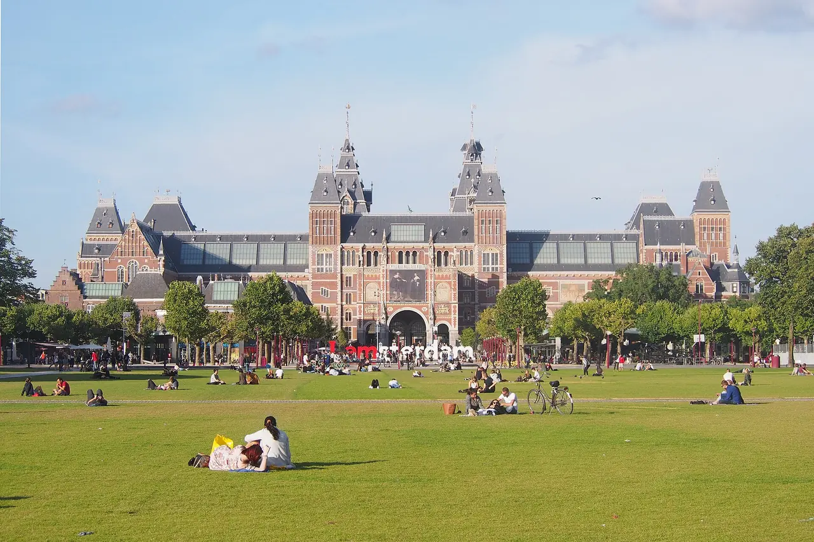
5. The Rijksmuseum, home of Rembrandt's Night Watch, seen from the MuseumpleinAlt: A large red-brick museum with pointed towers and a central archway beyond a wide lawn where people sit and picnic in the sunC messier · CC BY-SA 4.0 · Commons · 1280×853
Berlin berlin
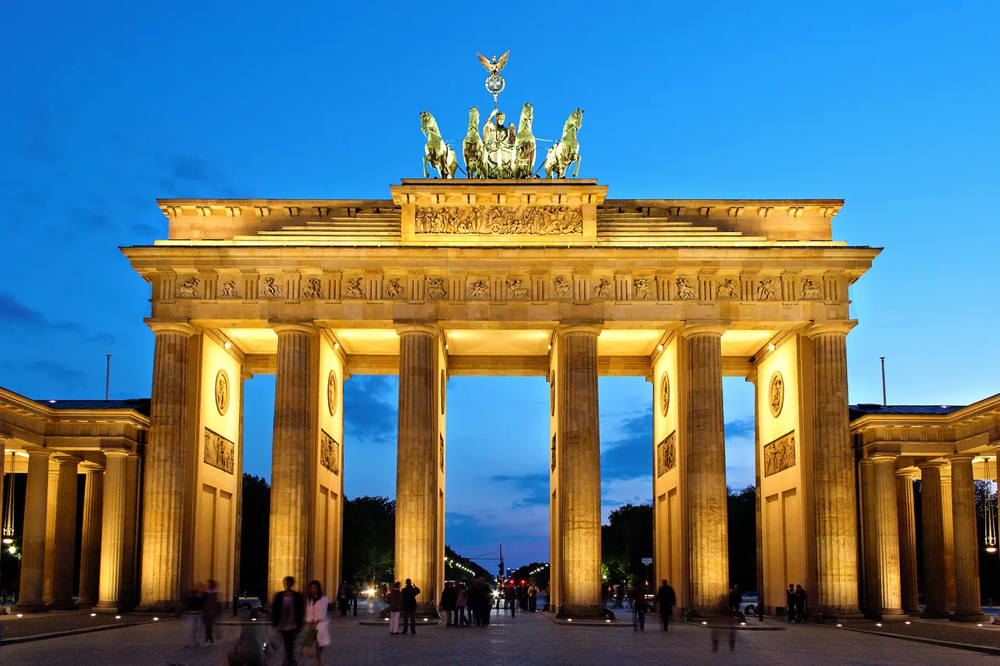
1. The Brandenburg Gate lit up at duskAlt: A large neoclassical stone gate with columns and a bronze chariot on top, floodlit golden against a deep blue evening skyThomas Wolf · CC BY-SA 3.0 · Commons · 1280×853
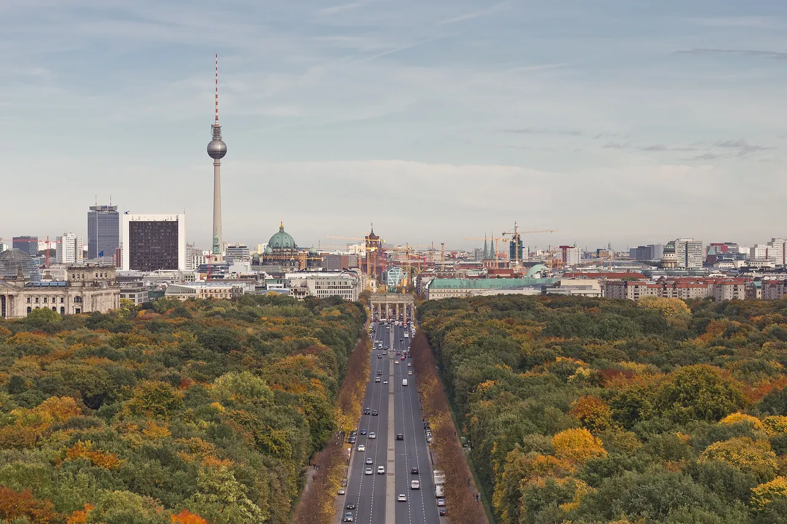
2. The Tiergarten from the Victory Column, looking east to the Brandenburg Gate and TV towerAlt: A straight avenue running through a large autumn-coloured park toward a gate, with the city and a tall TV tower on the horizonA.Savin · CC BY-SA 3.0 · Commons · 1280×853
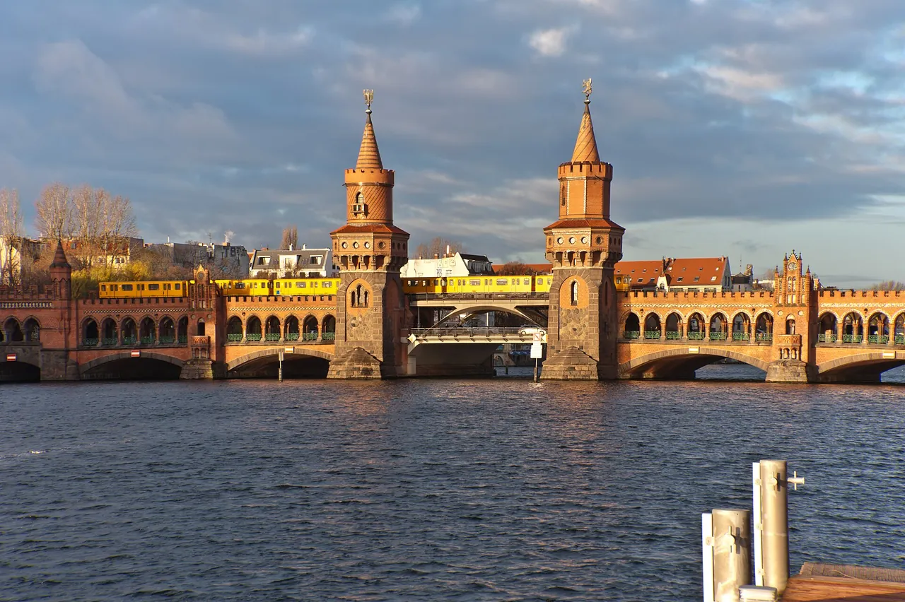
3. A yellow U-Bahn train crossing the Spree on the OberbaumbrückeAlt: A red-brick double-deck bridge with two towers over a river, with a yellow underground train on its upper deckHans-Jürgen Neubert · CC BY 4.0 · Commons · 1280×852
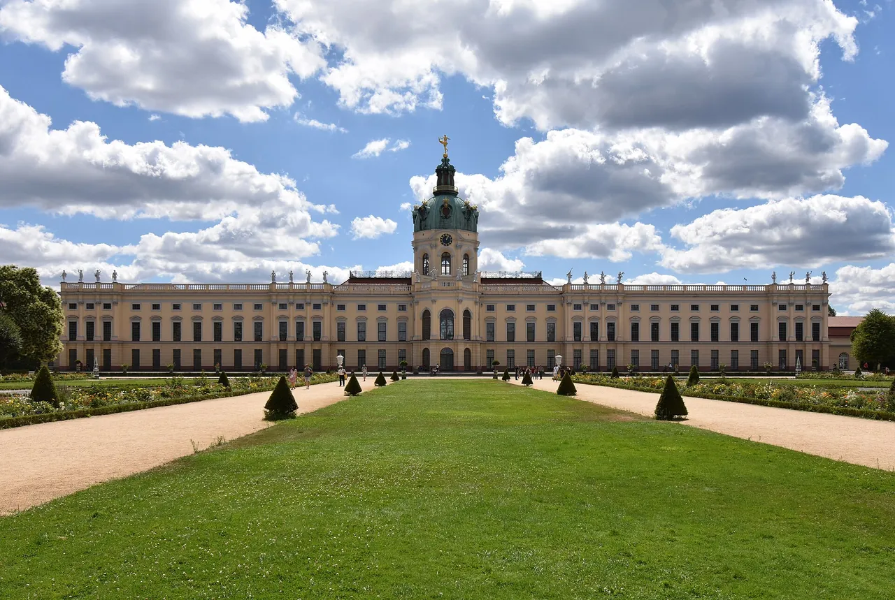
4. Charlottenburg Palace from its baroque gardensAlt: A long pale palace with a green-domed tower at the end of a lawn lined with gravel paths and clipped shrubs, under white cloudsMichael.F.H.Barth · CC BY-SA 4.0 · Commons · 1280×859
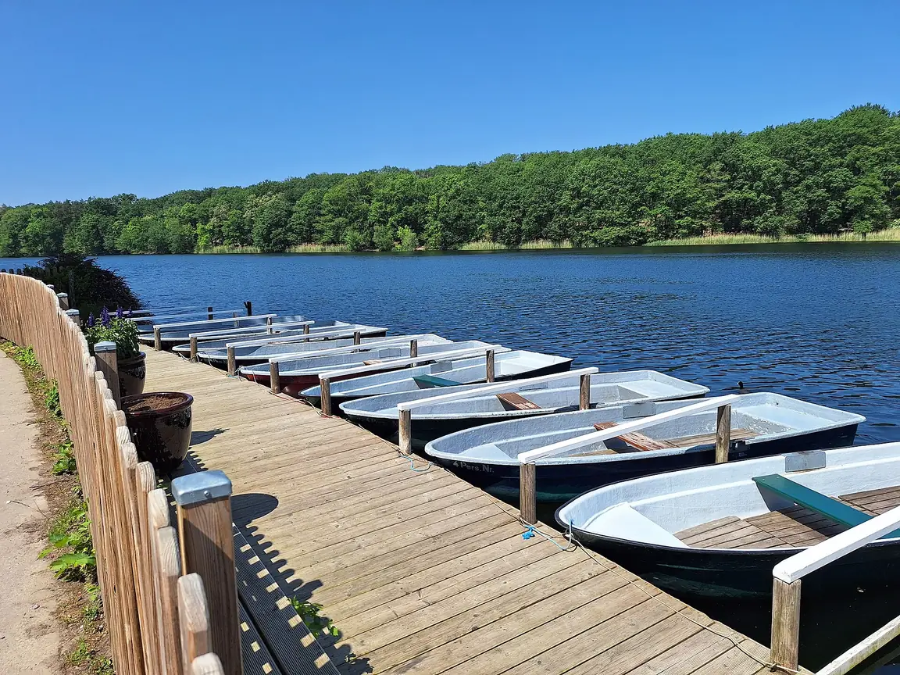
5. Rowing boats on the Schlachtensee, one of the lakes in Berlin's Grunewald forestAlt: White rowing boats moored along a wooden jetty on a blue lake ringed by forestFridolin freudenfett · CC BY-SA 4.0 · Commons · 1152×864
Dublin dublin
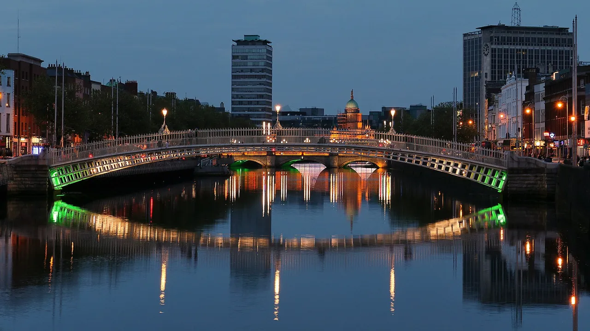
1. The Ha'penny Bridge over the River Liffey at duskAlt: A white cast-iron footbridge arching over a river at dusk, its lamps lit and reflected in the water, with city buildings behindRobert Linsdell · CC BY 2.0 · Commons · 1280×720
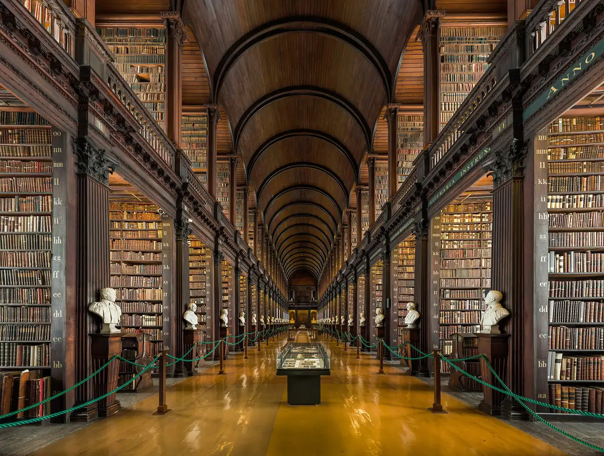
2. The Long Room of Trinity College's Old LibraryAlt: A long, tall library hall with a barrel-vaulted wooden ceiling, two storeys of book-lined shelves and marble busts along both sidesDiliff · CC BY-SA 4.0 · Commons · 1280×967
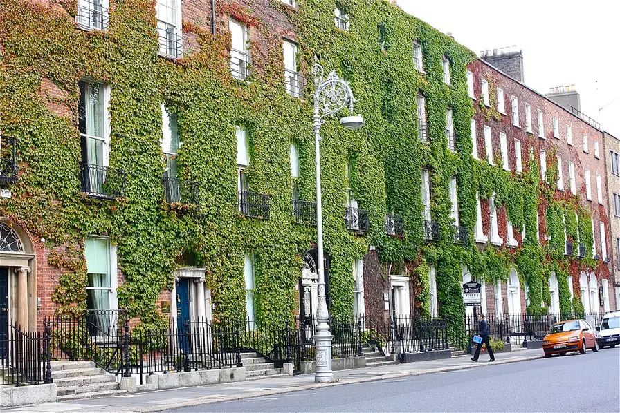
3. Ivy-covered Georgian terraces on Merrion SquareAlt: A row of four-storey brick Georgian houses covered in green ivy, with railings and an old street lamp in frontPastor Sam · CC BY 3.0 · Commons · 896×598
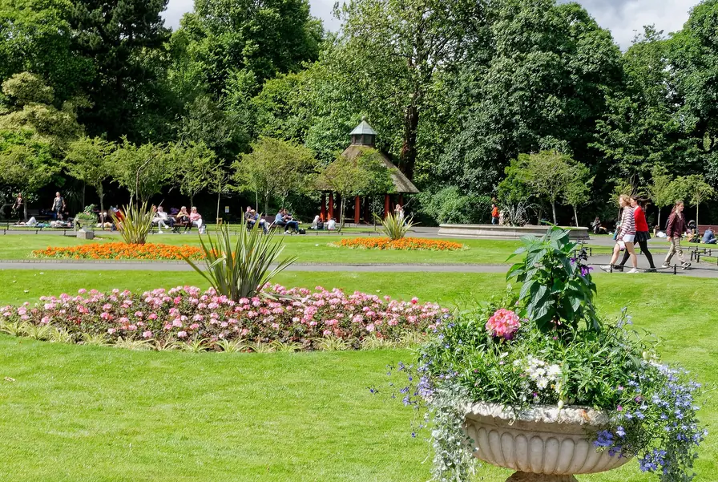
4. Flower beds in St Stephen's Green, the park at the heart of the cityAlt: Circular flower beds and a stone urn of flowers on a lawn, with tall trees and a small pavilion behindHolger Uwe Schmitt · CC BY-SA 4.0 · Commons · 896×601
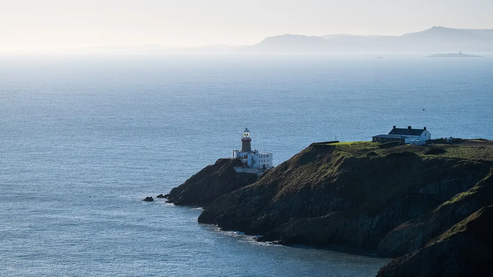
5. Baily Lighthouse on Howth Head, a train ride from the centreAlt: A lighthouse and white keeper's buildings on a dark green headland above a calm grey-blue sea, with hazy hills on the far shoreChristian David · CC BY-SA 4.0 · Commons · 1280×720
London london
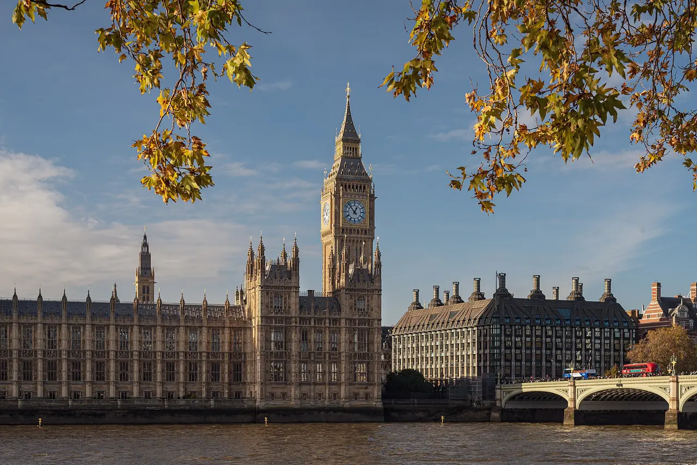
1. Big Ben and the Houses of Parliament across the ThamesAlt: A Gothic clock tower and the long ornate Parliament building beside a river, framed by autumn leaves under a blue skyJulian Herzog · CC BY 4.0 · Commons · 1280×855
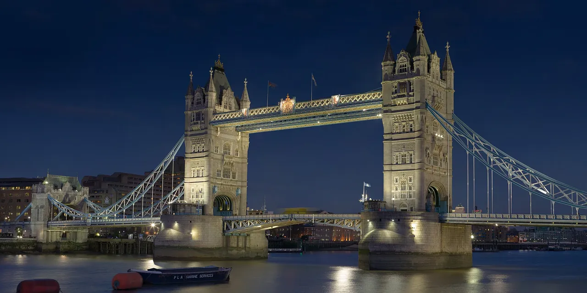
2. Tower Bridge at nightAlt: A Victorian bridge with two Gothic stone towers and blue suspension spans, lit up over a dark river at nightDiliff · CC BY-SA 3.0 · Commons · 1280×641
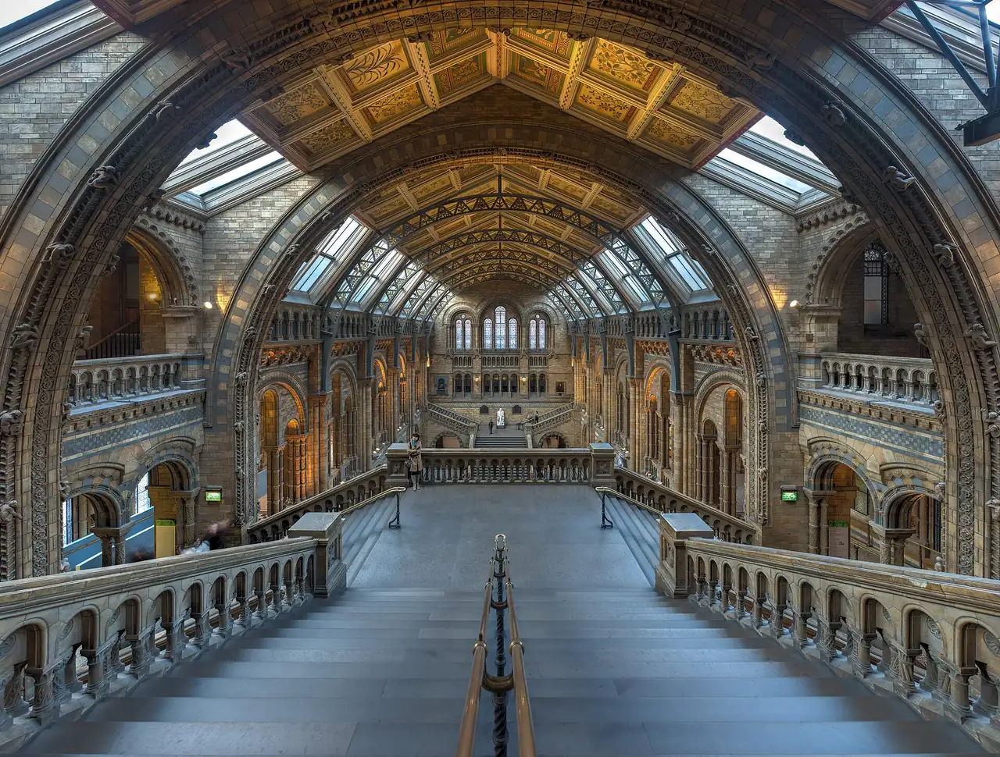
3. The main hall of the Natural History Museum, one of London's free national museumsAlt: A vast Romanesque hall with a painted ceiling, stone arches and a grand staircase, seen from the upper galleryDiliff · CC BY-SA 3.0 · Commons · 1280×970
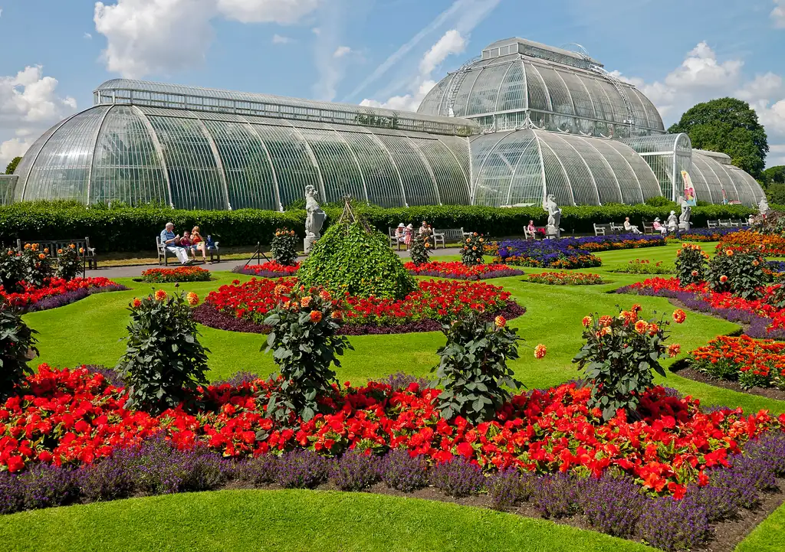
4. The Victorian Palm House and its flower beds at Kew GardensAlt: A large curved glass and iron greenhouse behind formal beds of red flowers and conical shrubs on a sunny dayDaniel Case · CC BY-SA 3.0 · Commons · 1024×721
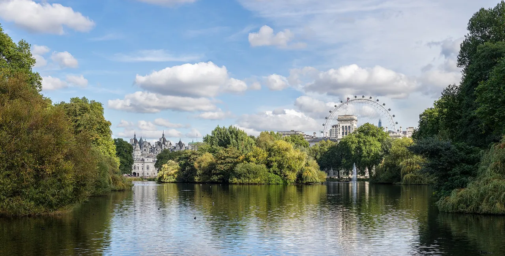
5. St James's Park lake, looking east to Horse Guards and the London EyeAlt: A tree-lined lake reflecting the sky, with the turreted white Horse Guards buildings on the left and the London Eye wheel rising behind trees on the rightColin · CC BY-SA 3.0 · Commons · 1280×650


.jpg){kind=link}


.jpg){kind=link}

_(32094198423).jpg){kind=link}